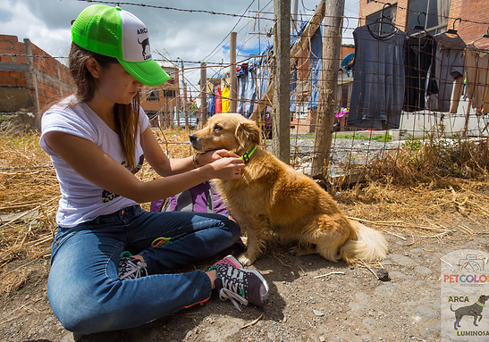
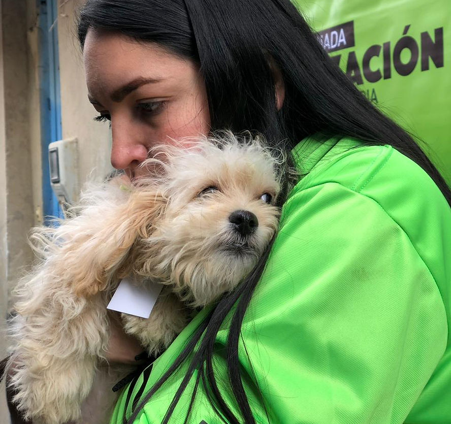

Alimentación
Recorremos puntos de la ciudad alimentando a los perritos y gatitos que viven en la calle.
Voluntariado · Bogotá y alrededores
Participá en nuestras jornadas de voluntariado en Bogotá y alrededores. Alimentá perritos callejeros, colocá collares reflectivos, ayudá en rescates de animales vulnerables, construí casitas con material reciclado, o asistí en jornadas de esterilización y cuidado postoperatorio.

¿En qué podés ayudar?
Recorremos puntos de la ciudad alimentando a los perritos y gatitos que viven en la calle.
Colocamos Collares de Vida para que los perritos callejeros sean visibles de noche y evitar accidentes.
Ayudamos a rescatar animales en situación de vulnerabilidad, junto a nuestro equipo y red de hogares de paso.
Construimos casitas con material reciclado para dar refugio a los animales que viven a la intemperie.
Asistimos en jornadas gratuitas de esterilización y en el cuidado postoperatorio de perros y gatos en zonas de sobrepoblación.
Así se ven nuestras jornadas


Antes de inscribirte
Ser voluntario de Arca Luminosa es simple. Estos son los cuatro requisitos para sumarte a cualquiera de nuestras jornadas.
Inscribite como voluntarioSer mayor de edad; si no lo sos, necesitás autorización firmada por tus acudientes.
Completar el proceso de inscripción y firmar la carta de exoneración de responsabilidades.
Ver el video tutorial para aprender a colocar los collares reflectivos.
Tener toda la actitud y disposición para ayudar.
Tu tiempo también rescata vidas
Voluntariado a distancia
Vos podés llevar nuestro proyecto a tu ciudad o país — iluminar vidas es muy fácil.